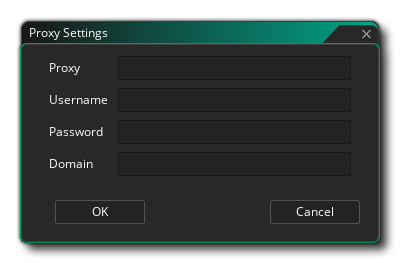

Une fois que vous avez téléchargé et installé GameMaker Studio 2, il vous sera demandé de saisir les détails de votre licence lors de la première utilisation:
Votre licence est liée à un compte YoYo (YYA) et vous devez en GameMaker Studio un pour pouvoir utiliser GameMaker Studio 2. Ce compte contient tous les détails de votre licence pour les produits YoYo Games que vous possédez et est également utilisé pour le marché YoYo Games. Vous pouvez trouver plus d'informations sur le YYA à partir de la page suivante:
IMPORTANT! Si vous utilisez une licence d' GameMaker Studio 2 de GameMaker Studio 2, puis achetez l'une des autres licences (Desktop, Mobile, UWP, Web ou console), vous pourrez vous déconnecter de l'EDI, puis redémarrer GameMaker Studio et vous GameMaker à nouveau pour vous assurer que la nouvelle licence est appliquée correctement (même si cela devrait se produire automatiquement). Vous pouvez vous déconnecter à partir du menu Fichier.

Support proxy
Si vous avez besoin de l'assistance du proxy pour votre installation de GameMaker Studio 2, vous pouvez l'ajouter simplement en cliquant sur le proxy. Cela fera apparaître la fenêtre suivante: 
Vous pouvez maintenant ajouter vos informations de proxy. Certains des champs indiqués ci-dessus sont facultatifs et s'il en existe un dont vous n'avez pas besoin, laissez simplement le champ vide. Avant de poursuivre, il convient toutefois de noter que si vous avez défini un proxy dans vos options Internet Windows et qu’il ne nécessite pas de nom d’utilisateur / mot de passe, il devrait alors être "tel quel" et vous ne serez probablement pas tenu de configurer le proxy dans GameMaker Studio 2.
Si votre proxy requiert un nom d'utilisateur et / ou un mot de passe, vous devrez les ajouter aux champs indiqués dans la fenêtre ci-dessus. Notez que dans ces cas, les détails du nom d'utilisateur / mot de passe / proxy seront toujours requis, et que l'adresse IP du proxy devrait également avoir le port ajouté, à savoir: xx.xx.xx.xx:port.
Une fois que vous avez ajouté les informations pertinentes, cliquez sur OK et connectez-vous à GameMaker Studio 2 normalement.